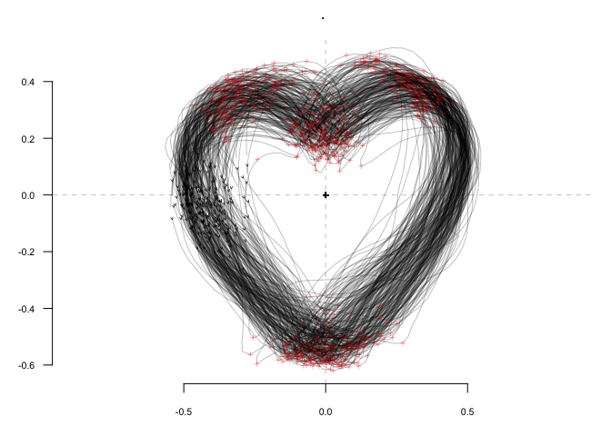
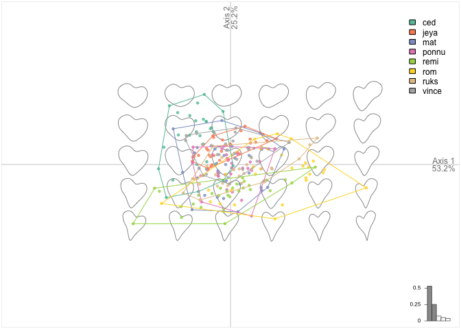
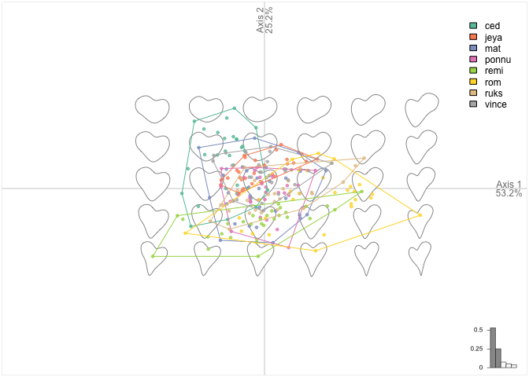

News
- Momocs is now retiring and, one day, will no longer be supported in favour of Momocs2 and the entire MomX ecosystem. (as of Jan 26)
- I’m available for consulting, training and collaboration, worldwide.
- Momocs is back on CRAN and no longer relies on the retired
rgeosdependency - The tutorial/introduction is back! Download it there
Installation
The last released version can be installed from CRAN with:
install.packages("Momocs")But I recommend using (and only support) the development version from GitHub with:
# install.packages("devtools")
devtools::install_github("MomX/Momocs")Example
This is a basic example of a complete analysis doing: inspection, normalization of raw outlines, elliptical Fourier transforms, dimmensionality reduction and classification, using a single line.
devtools::load_all()
#> ℹ Loading Momocs
#> Registered S3 method overwritten by 'vegan':
#> method from
#> rev.hclust dendextend
hearts %T>% # A toy dataset
stack() %>% # Take a family picture of raw outlines
fgProcrustes() %>% # Full generalized Procrustes alignment
coo_slide(ldk = 2) %T>% # Redefine a robust 1st point between the cheeks
stack() %>% # Another picture of aligned outlines
efourier(6, norm=FALSE) %>% # Elliptical Fourier Transforms
PCA() %T>% # Principal Component Analysis
plot_PCA(~aut) %>% # A PC1:2 plot
LDA(~aut) %>% # Linear Discriminant Analysis
plot_CV() # And the confusion matrix after leave one out cross validation 
